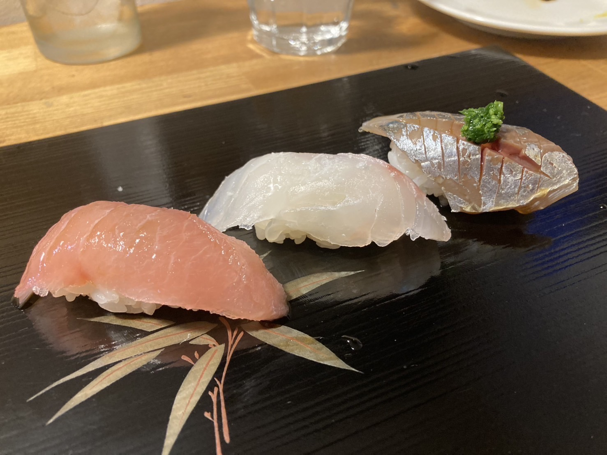

01
初めてでも参加できる
握り方はその場で見ながら試せます。きれいにできることより、まず自分の手で一貫を作ることを大切にします。

見て、握って、食べて、話す。
初対面でも、名刺交換より先に同じシャリを触る。見よう見まねで握って、食べて、感想を交わす。鮨をきっかけに、人との距離が自然に近づく少人数の体験交流会です。
登録は無料です。参加を決める前に、次回日程と参加条件だけ確認できます。

ABOUT
うまく握れるかより、同じ体験を共有することが、この会の中心です。
この会は、鮨職人を目指すための講座ではありません。鮨を握ったことがない人でも、目の前で見て、試して、自分で握った一貫を食べるところまで体験できます。
シャリの温かさ、ネタの香り、隣の人の手元。「ちょっと強く握りすぎたかも」という一言から会話が始まる。食事会でも勉強会でもない、手を動かすからこそ生まれる交流の場です。
POINT
目的は「鮨が上手くなること」だけではありません。鮨を握る体験を通じて、人と打ち解ける感覚を持ち帰っていただく会です。
握り方はその場で見ながら試せます。きれいにできることより、まず自分の手で一貫を作ることを大切にします。
同じネタとシャリを使っても、握る人によって味や形が変わります。その違いが、そのまま自然な会話になります。
シャリの温度、酢の香り、手に残る感触。画面から離れて、目の前の一貫に集中する時間になります。
FLOW
難しい準備は必要ありません。見て、握って、食べて、感想を交わす。その順番で進みます。
シャリの取り方、ネタののせ方、力加減を目の前で見ます。専門用語より、まず感覚でつかみます。
見たままに手を動かして、一貫ずつ握ります。形が崩れても大丈夫です。そこから会話が生まれます。
自分で握った鮨を食べ、必要に応じて他の方の一貫とも比べます。同じ材料でも違いが出ることを体感できます。
「柔らかい」「香りが違う」「意外と難しい」。そんな感想をきっかけに、自然と話が広がります。
SCENE
かしこまった講座ではなく、鮨を囲んで手を動かす時間です。一人参加でも、共通の体験があるので会話の入口が作りやすくなります。



VOICE
参加前の不安や、体験後にどんな印象が残ったかは、実際の声をご覧ください。
INFORMATION
開催日は固定ではありません。興味がある方には、公式LINEで次回の案内や空き状況をお知らせします。
FIT
参加後のズレを減らすために、この会の位置づけを先にお伝えします。
FAQ
はい。初めての方を前提に進めます。きれいに握ることより、自分の手で作って食べてみることを大切にしています。
お一人参加も可能です。鮨を握る共通体験があるため、最初から会話のきっかけが作りやすい場です。
この会は技術習得を目的にした講座ではありません。より深く学びたい方には、別途3時間の実践講座をご案内できる場合があります。
次回開催が決まった際の案内、空き状況、参加条件の確認をお送りします。参加を強制するものではありません。

HOST
13年間の会社員生活を経て、未経験から鮨職人へ。紹介制の鮨会「鮨まさや」を主宰し、鮨を通じて分かち合い、ご縁を紡ぐ場をつくってきました。この交流会では、鮨を握る技術だけでなく、握ることで人との距離が近づく体験を大切にしています。
ENTRY
まだ参加を決めていなくても大丈夫です。次回開催の日程、空き状況、参加条件を確認したい方は、公式LINEから案内を受け取ってください。